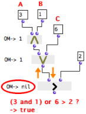

Logical Operators
Omor
 and omand
and omand
 are
boolean logical operators
that stand for the "and" and "or" coordinating conjunctions.
are
boolean logical operators
that stand for the "and" and "or" coordinating conjunctions.
- A proposition that contains an "and" is true if all its elements are true.
- A proposition that contains an "or" is true if at least one of its elements is true.
For instance, the following propositions are respectively true and false :
- A : "Men are living creatures". B : "Cats are living creatures". "A and B" is true, and "A or B" is true.
- A : "Men are human beings." B : "Cats are human beings". "A or B" is true, but "A and B" is not true.
In OM
- the omand box returns "true" if all its inputs return "true". Otherwise, it returns "nil".
- the omor box returns "true" if one of its inputs return "true". Otherwise, it returns "nil".
Logical operators are accessed via the Functions / OM Kernel / Control / Logical Operators, menu.
Functionalities and Behaviour
Operators have one default input, "self" and as many additional "rest" inputs as necessary
- "self" : any data
- "rest" : any data.
Their output returns data, or "nil".
Logical operators evaluate their inputs successively. Any non "nil" data is "true".
Consequently, operators don't have to verify the truth-value of a proposition, to return "true". Numbers, as well as symbols and other non nil values are always "true" for logical operators.
Logical operators are also used for associating several predicates in a single proposition.
Inputs are evaluated from left to right.
| Omor tests a first input , and stops if it is true . If not, it goes on until it gets "true". As a consequence, omor returns the first non-nil value, or "nil" if all inputs return "nil". In this example, omor will always return the first input, "A". |
| Omand stops the evaluation if one of its inputs is not true . It goes on until it gets "nil", or until it reaches the last input. All inputs have to be true for the condition to be verified, and omand then returns the last non-nil value. In this example, omand will always return the last input, "B". |
The following program tests if a random number between 1 and 5 is superior to 1 and inferior to 4.
|  |
Note that om-random is on "evaluate-once" mode, so that the same result is sent to all boxes during the same evaluation.
Composing Propositions : Associating Logical Operators with Predicates
Operators behave with predicates like with any other boxes. Predicates are evaluated one by one, from left to right and return "true" or "nil".
- Omand returns "true" if all predicates return "true", and returns "nil" if one predicate returns "nil".
- Omor returns "true" as soon as one predicate passes "true", and returns "nil" if all predicates return "nil".
We might use logical operators to compare more than one value to another, as in the following proposition : "If A and B or C are superior to D, then return A, B, and C."
If we formalize the proposition literally, the program will be ineffective and will lead to a miscalculation.
 | Let's test if 3 and 1 or 6 are superior to 2 :
|
6 should be compared with 2, and 6 is superior to 2. Om> should return "true". The error comes from the way predicates have been applied with logical operators.
Formalizing a comparison with predicates and logical operators implies that :
First, predicates must compare values by pairs.
Then, logical operators must be applied to the result of each comparison .
 | Be a list. Each number of the list is compared with a number.
|